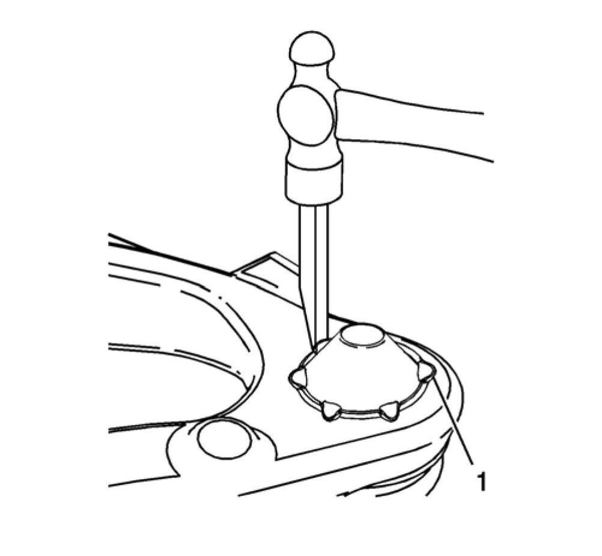
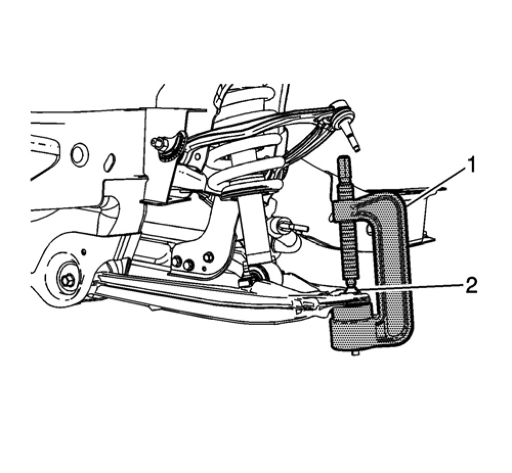
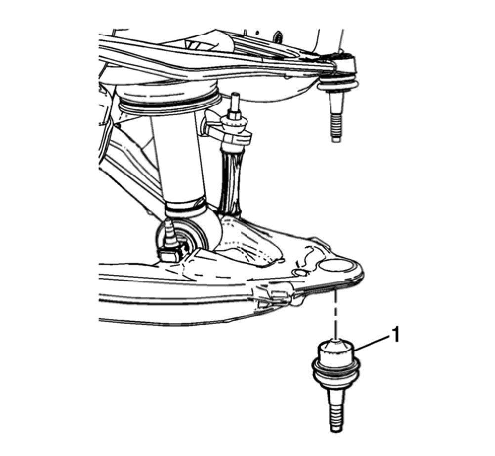
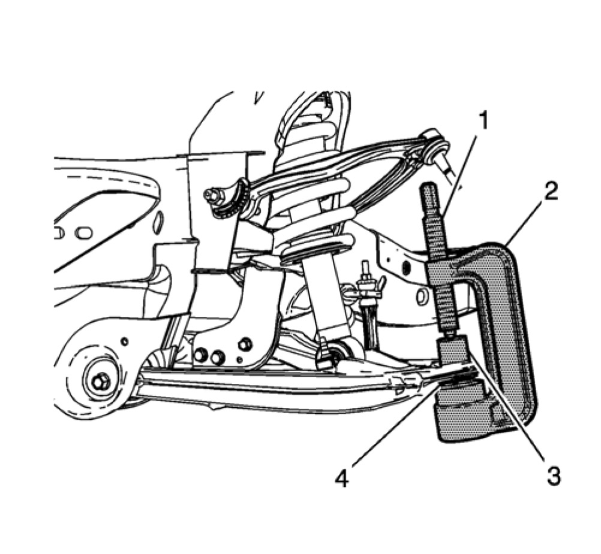
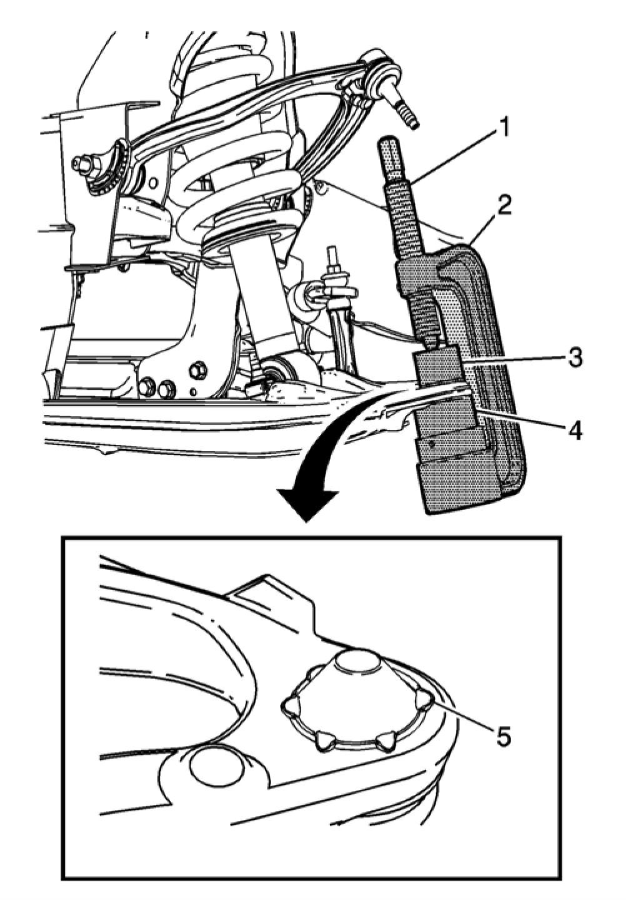

Lower Ball Joint Replacement (1500)
Lower Control Arm Ball Joint Replacement (1500)
Special Tools
- CH-49240 Ball Joint Crimper and Install Kit
- J-41805 Ball Joint Remover Install Kit
Removal Procedure
1. Raise and support the vehicle.
2. Remove the wheel drive shaft, if needed. Refer to Wheel Drive Shaft Replacement Service and Repair.
Note: Ensure that the knuckle is secured away from the lower control arm.
3. Remove the steering knuckle from the vehicle. Refer to Steering Knuckle Replacement Service and Repair.

4. Using a hammer chisel, remove the locking tabs (1) from the ball joint body.

Note: Ensure that the upper ball joint is not being rubbed on the ratchet during the removal or installation of the lower ball joint. Rubbing on the upper ball joint seal will cause premature failure of the upper ball joint.
5. Position the J-41805 kit (1) on the lower control arm.
6. Using the J-41805 kit (1) and a shallow socket, remove the lower ball joint (2) from the control arm.
Installation Procedure

1. Position the ball joint (1) in the lower control arm.

Note: Ensure that the upper ball joint is not being rubbed on the ratchet during the removal or installation of the lower ball joint. Rubbing on the upper ball joint seal will cause premature failure of the upper ball joint.
Note: When using adapter CH-49240�2, the ensure that the teeth for the lock tabs are facing upward.
2. Using the and a shallow socket J-41805 kit (2), CH-49240-3 (1), CH-49240-1 (4) and the CH-49240-2 (2), install the ball joint.

3. Reverse the CH-49240-2 (3).
4. Using the J-41805 kit (2), CH-49240-3 (1), CH-49240-1 (4) and the CH-49240-2 (2), collapse the edge of the ball joint to create the lock tabs (5). Tighten the CH-49240-3 to 250 Nm (184 lb ft).
Note: Repeat step 4 to ensure that all of the lock tabs are of the same depth and size.
5. Rotate the J-41805 kit (2) 180 degrees and repeat the process.
6. Install the wheel drive shaft, if needed. Refer to Wheel Drive Shaft Replacement Service and Repair.
7. Install the steering knuckle in the vehicle. Refer to Steering Knuckle Replacement Service and Repair.
8. Install the lower ball joint stud nut and tighten to:
- First Pass: 50 Nm (37 lb ft)
- Final Pass: additional 130 degrees
9. Remove the supports and lower the vehicle.